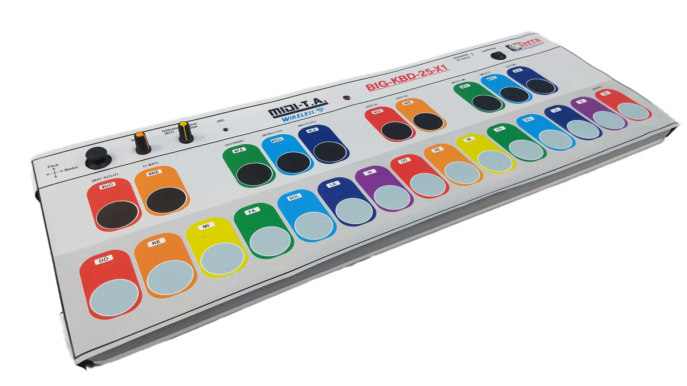
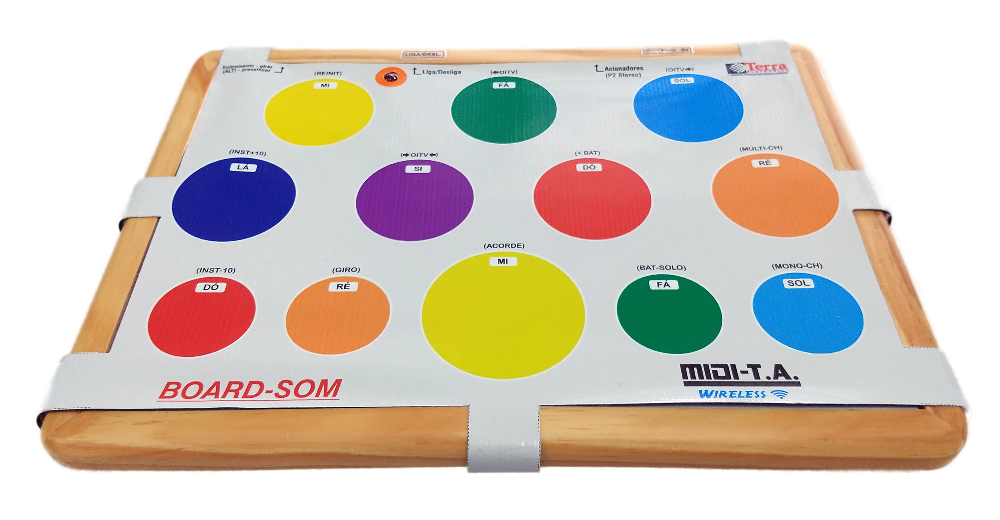
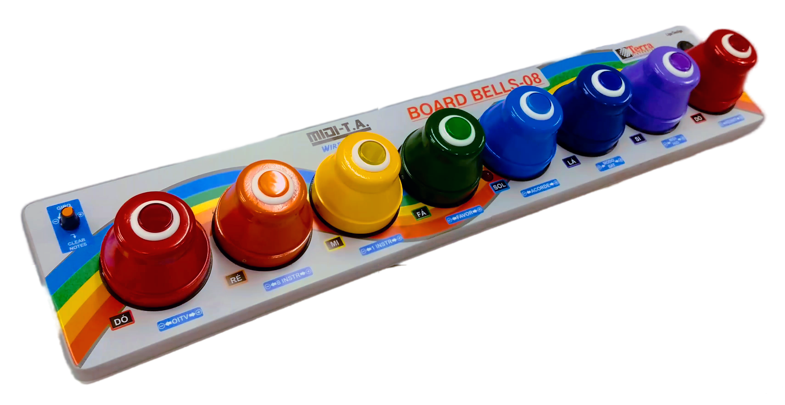
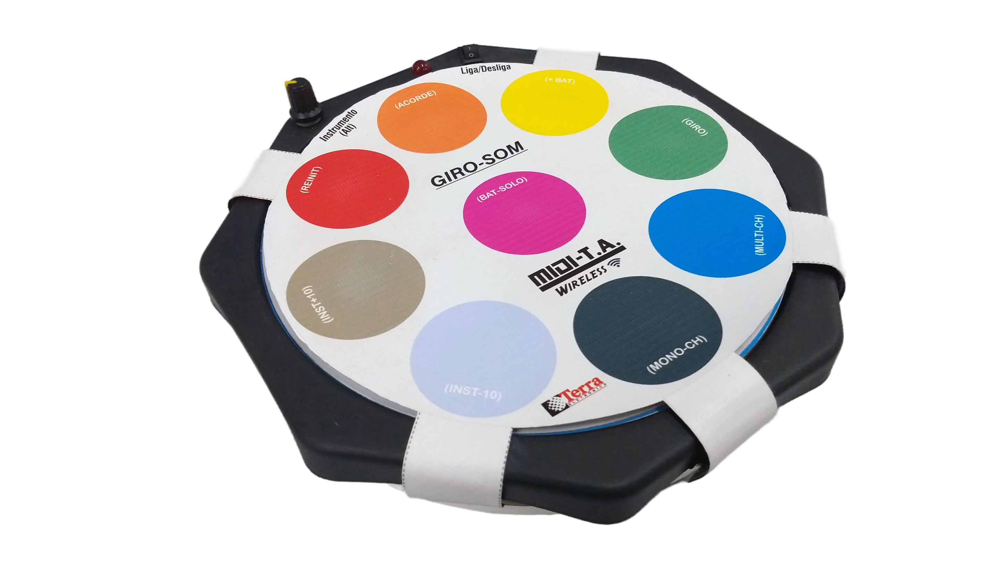
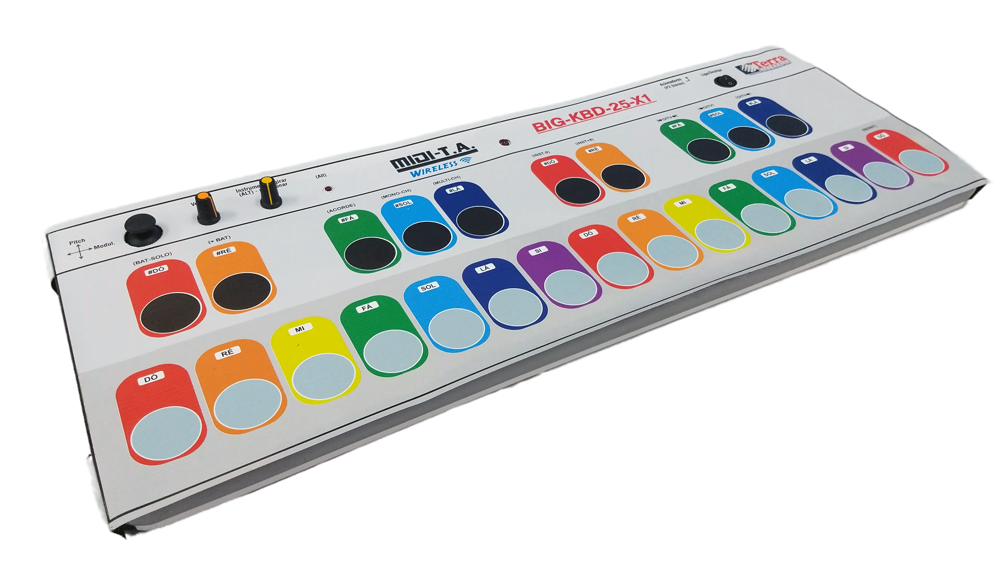
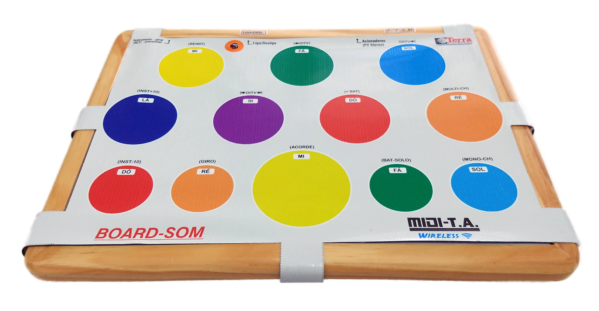
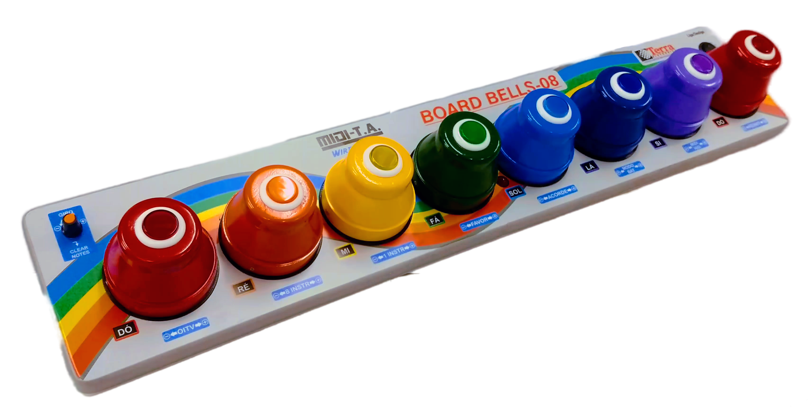
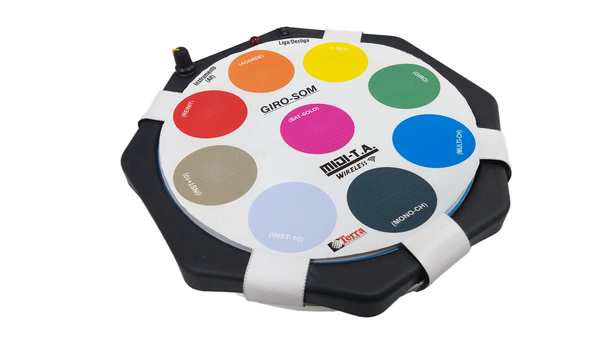
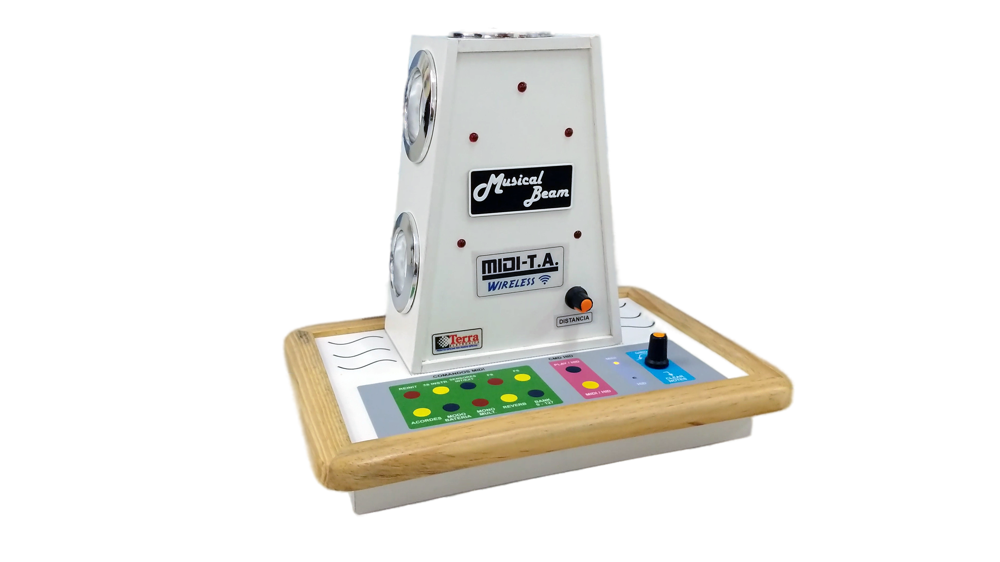
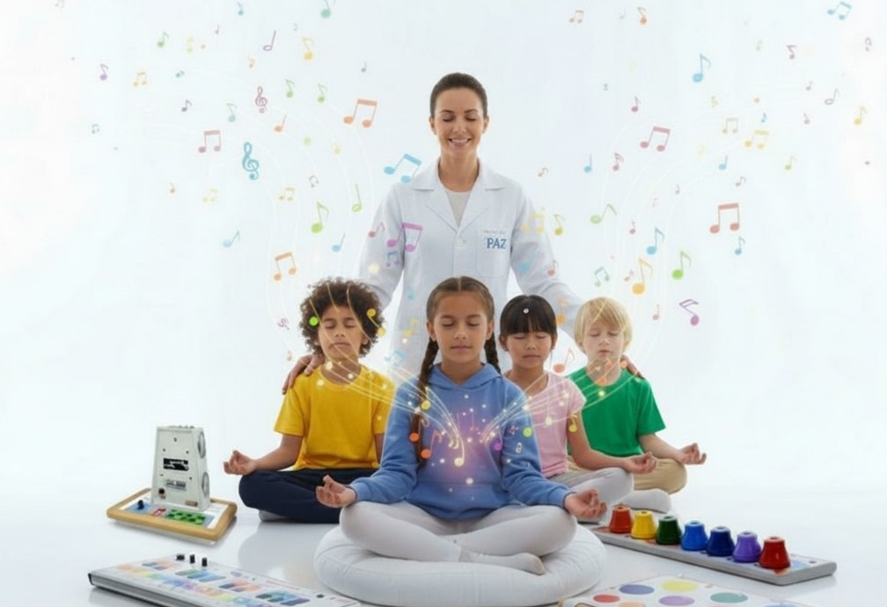

BIG_KBD_25
Grande teclado musical com 25 teclas grandes, sensíveis e robustas, com diversos efeitos e controles via comandos MIDI.
Sistema revolucionário de instrumentos musicais wireless desenvolvido especialmente para musicoterapia e pessoas com deficiência. Uma rede MIDI completa com 5 instrumentos diferentes, promovendo inclusão e acessibilidade através da música.
Em 2022, a Terra Eletrônica® lançou uma linha de instrumentos musicais voltados para a acessibilidade, denominada NET-MIDI-T.A., a fim de expandir a área relacionada à "Musicoterapia" para pessoas com alguma deficiência.
Com tecnologia consolidada e hardware personalizado e robusto, obtivemos grande sucesso no lançamento realizado na REATECH BRASIL 2022 – Feira Internacional de Tecnologias em Reabilitação, Inclusão e Acessibilidade.
Rede MIDI sem fio com latência menor que 10ms
Até 5 instrumentos conectados simultaneamente
Projetado especialmente para pessoas com deficiência
Pareamento automático e imediato
Cinco modelos únicos, cada um desenvolvido para atender diferentes necessidades e tipos de deficiência

Grande teclado musical com 25 teclas grandes, sensíveis e robustas, com diversos efeitos e controles via comandos MIDI.

Placa de música retangular com 12 regiões de toque coloridas, efeitos integrados e giroscópio para modulação.

Painel interativo com sinos musicais virtuais e controles táteis avançados, proporcionando experiência sonora rica e acessível.

Tabuleiro musical redondo com 09 regiões de toque coloridas, efeitos especiais e controle giroscópico avançado.

Instrumento wireless com 05 sensores laser de distância, proporcionando interação sem toque físico da pessoa.
Confira demonstrações práticas dos instrumentos NET-MIDI-T.A. sendo utilizados em sessões de musicoterapia

Demonstração do teclado adaptado com teclas grandes sendo utilizado em sessão de musicoterapia.

Veja como o painel com 12 regiões coloridas estimula a criatividade musical e a coordenação motora.

Experiência sonora única com sinos virtuais proporcionando terapia através da música.

Tabuleiro redondo com controle giroscópico oferecendo uma nova dimensão na interação musical.

Tecnologia laser sem toque físico, ideal para pessoas com limitações motoras severas.

Múltiplos instrumentos NET-MIDI-T.A. trabalhando em conjunto numa sessão terapêutica real.
Entre em contato conosco para saber mais sobre preços, demonstrações e como esses instrumentos podem transformar sua prática musicoterapêutica.